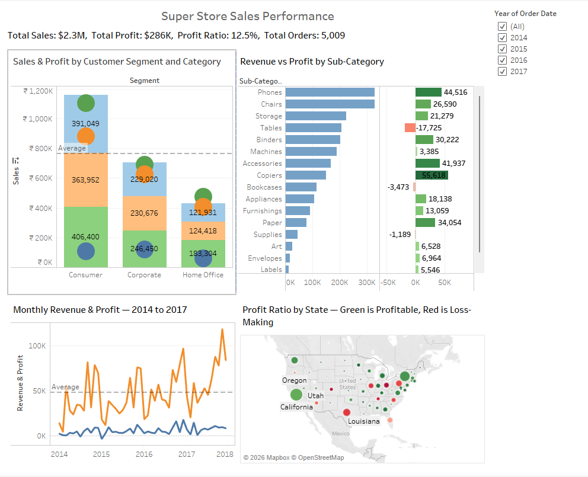
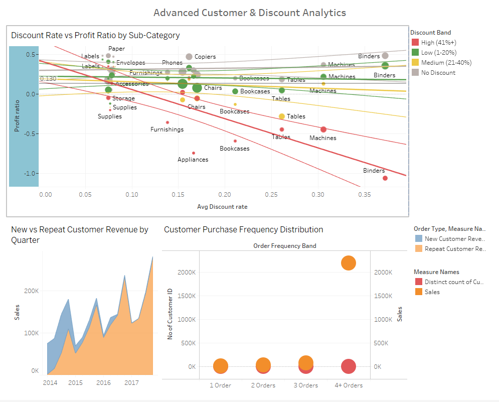

A two-dashboard Tableau workbook revealing what's working, what isn't, and where a retail manager should focus — built with LOD expressions, dashboard actions and advanced analytics.
"What's working, what isn't, and where should I focus?"
— Retail Manager, US Superstore
Without a centralised view, performance monitoring was scattered across spreadsheets, regional reports and product lists — making it impossible to spot trends, compare segments or identify which products were actually profitable.


tableau-superstore-sales-analytics/
│
├── README.md
├── superstore_dashboard.twbx
│
└── screenshots/
├── dashboard1_overview.png
└── dashboard2_advanced.png
superstore_dashboard.twbx — dataset is bundled inside.